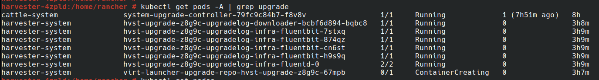
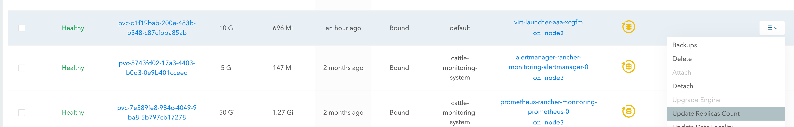
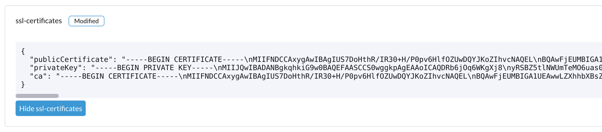

Fazer upgrade da v1.1.2 para a v1.2.0 (não é recomendado)
|
Devido aos problemas conhecidos encontrados na v1.2.0: Não recomendamos fazer upgrade para a v1.2.0. Por favor, faça upgrade do seu cluster v1.1.x para a v1.2.1. |
Informações gerais
|
Antes de iniciar um upgrade, você pode executar o script de pré-verificação para garantir que o cluster esteja em um estado estável. Para mais detalhes, visite este URL para o script. |
Uma vez que haja uma versão disponível para upgrade, a página do painel do Harvester GUI mostrará um botão de upgrade. Para mais detalhes, consulte iniciar um upgrade.
Para o upgrade em ambiente air gap, consulte preparar um upgrade air-gapped.
Problemas conhecidos
1. Um upgrade não pode ser iniciado e relata "validator.harvesterhci.io" denied the request: managed chart rancher-monitoring is not ready, please wait for it to be ready
Se um cluster estiver configurado com uma rede de armazenamento, um upgrade não pode ser iniciado com a seguinte mensagem.

2. Um upgrade está preso em Creating Upgrade Repository
Durante um upgrade, Criando repositório de upgrade está preso no estado Pending:

Por favor, execute os seguintes passos para verificar se o cluster enfrenta o problema:
-
Verifique o pod do repositório de upgrade:

Se o pod
virt-launcher-upgrade-repo-hvst-<upgrade-name>permanecer emContainerCreating, seu cluster pode ter encontrado esse problema. Nesse caso, prossiga para o passo 2. -
Verifique o volume do repositório de upgrade na interface do Longhorn.
-
Navegue até a página Volume.
-
Verifique o volume da VM do repositório de upgrade. Deve estar anexado a um pod chamado
virt-launcher-upgrade-repo-hvst-<upgrade-name>. Se uma das réplicas do volume permanecer emStopped(cor cinza), o cluster está enfrentando o problema.
-
Problema relacionado:
-
Solução:
-
Exclua a réplica
Stoppedda interface do Longhorn. Ou
-
3. Um upgrade está preso no estado de pré-draining de um nó
A partir da versão v1.1.0, o Harvester aguardará que todos os volumes se tornem saudáveis (quando a contagem de nós >= 3) antes de fazer um upgrade em um nó. Geralmente, você pode verificar a saúde dos volumes se um upgrade estiver preso no estado "pre-draining".
Visite "Acessar Longhorn Embutido" para ver como acessar a interface do Longhorn embutido.
Você também pode verificar os logs do trabalho de pré-drain. Consulte Fase 4: Faça upgrade dos nós no guia de solução de problemas.
4. Um upgrade está preso na atualização do primeiro nó: O trabalho estava ativo por mais tempo do que o prazo especificado.
Um upgrade falha, conforme mostrado na captura de tela abaixo:

5. Um upgrade está preso no estado Pré-drenado
Você pode ver que um upgrade está preso no estado "pré-drenado":

Nesta fase, o Kubernetes deve drenar a carga de trabalho no nó, mas algumas razões podem fazer o processo travar.
5.1 O nó contém um pod Longhorn instance-manager-r que serve volumes de réplica única
O Longhorn não permite drenar um nó se o nó contém a última réplica sobrevivente de um volume. Para verificar se um nó está enfrentando essa situação, siga estas etapas:
-
Liste os volumes de réplica única com o comando:
kubectl get volumes.longhorn.io -A -o yaml | yq '.items[] | select(.spec.numberOfReplicas == 1) | .metadata.namespace + "/" + .metadata.name'
Por exemplo:
$ kubectl get volumes.longhorn.io -A -o yaml | yq '.items[] | select(.spec.numberOfReplicas == 1) | .metadata.namespace + "/" + .metadata.name' longhorn-system/pvc-d1f19bab-200e-483b-b348-c87cfbba85ab
-
Verifique se a réplica reside no nó preso:
Liste o NodeID da réplica do volume com o comando:
kubectl get replicas.longhorn.io -n longhorn-system -o yaml | yq '.items[] | select(.metadata.labels.longhornvolume == "<volume>") | .spec.nodeID'
Por exemplo:
$ kubectl get replicas.longhorn.io -n longhorn-system -o yaml | yq '.items[] | select(.metadata.labels.longhornvolume == "pvc-d1f19bab-200e-483b-b348-c87cfbba85ab") | .spec.nodeID' node1
Se o resultado mostrar que a réplica reside no nó onde o upgrade está preso (neste exemplo, nó1), seu cluster está enfrentando esse problema.
Existem algumas maneiras de resolver essa situação. Escolha o método mais apropriado para sua VM:
-
Desligue a VM que usa o volume de réplica única para desanexar o volume, permitindo que o upgrade continue.
-
Ajuste as réplicas do volume para mais de uma.
-
Vá para a página Volume.
-
Localize o volume problemático e clique no ícone do lado direito, em seguida, selecione Atualizar Contagem de Réplicas:

-
Aumente o Número de Réplicas e selecione OK.
5.2 Orçamentos de Disrupção de Pod Longhorn instance-manager-r mal configurados (PDB)
Um PDB mal configurado pode causar esse problema. Para verificar se esse é o caso, execute os seguintes passos:
-
Assuma que o nó travado é
harvester-node-1. -
Verifique os nomes dos pods
instance-manager-eouinstance-manager-rno nó travado:$ kubectl get pods -n longhorn-system --field-selector spec.nodeName=harvester-node-1 | grep instance-manager instance-manager-r-d4ed2788 1/1 Running 0 3d8h
A saída acima mostra que o pod
instance-manager-r-d4ed2788está no nó. -
Verifique os logs do Rancher e confirme que o pod
instance-manager-eouinstance-manager-rnão pode ser drenado:$ kubectl logs deployment/rancher -n cattle-system ... 2023-03-28T17:10:52.199575910Z 2023/03/28 17:10:52 [INFO] [planner] rkecluster fleet-local/local: waiting: draining etcd node(s) custom-4f8cb698b24a,custom-a0f714579def 2023-03-28T17:10:55.034453029Z evicting pod longhorn-system/instance-manager-r-d4ed2788 2023-03-28T17:10:55.080933607Z error when evicting pods/"instance-manager-r-d4ed2788" -n "longhorn-system" (will retry after 5s): Cannot evict pod as it would violate the pod's disruption budget.
-
Execute o comando para verificar se há um PDB associado ao nó travado:
$ kubectl get pdb -n longhorn-system -o yaml | yq '.items[] | select(.spec.selector.matchLabels."longhorn.io/node"=="harvester-node-1") | .metadata.name' instance-manager-r-466e3c7f
-
Verifique o proprietário do gerenciador de instâncias para este PDB:
$ kubectl get instancemanager instance-manager-r-466e3c7f -n longhorn-system -o yaml | yq -e '.spec.nodeID' harvester-node-2
Se a saída não corresponder ao nó travado (neste exemplo,
harvester-node-2não corresponde ao nó travadoharvester-node-1), então podemos concluir que esse problema ocorre. -
Antes de aplicar a solução alternativa, verifique se todos os volumes estão saudáveis:
kubectl get volumes -n longhorn-system -o yaml | yq '.items[] | select(.status.state == "attached")| .status.robustness'
A saída deve ser toda
healthy. Se este não for o caso, você pode querer desbloquear os nós para tornar o volume saudável novamente. -
Remova o PDB mal configurado:
kubectl delete pdb instance-manager-r-466e3c7f -n longhorn-system
-
Problema relacionado:
-
5.3 O pod instance-manager-e não pôde ser drenado
Durante um fazer upgrade, você pode encontrar um problema onde não consegue drenar o pod instance-manager-e. Quando essa situação ocorre, você verá mensagens de erro nos logs do Rancher como as mostradas abaixo:
$ kubectl logs deployment/rancher -n cattle-system | grep "evicting pod" evicting pod longhorn-system/instance-manager-r-a06a43f3437ab4f643eea7053b915a80 evicting pod longhorn-system/instance-manager-e-452e87d2 error when evicting pods/"instance-manager-r-a06a43f3437ab4f643eea7053b915a80" -n "Longhorn-system" (will retry after 5s): Cannot evict pod as it would violate the pod's disruption budget. error when evicting pods/"instance-manager-e-452e87d2" -n "longhorn-system" (will retry after 5s): Cannot evict pod as it would violate the pod's disruption budget.
Verifique o instance-manager-e para ver se alguma instância de motor permanece.
$ kubectl get instancemanager instance-manager-e-452e87d2 -n longhorn-system -o yaml | yq -e ".status.instances"
pvc-7b120d60-1577-4716-be5a-62348271025a-e-1cd53c57:
spec:
name: pvc-7b120d60-1577-4716-be5a-62348271025a-e-1cd53c57
status:
endpoint: ""
errorMsg: ""
listen: ""
portEnd: 10001
portStart: 10001
resourceVersion: 0
state: running
type: ""
Neste exemplo, o instance-manager-e-452e87d2 ainda tem uma instância de motor, então você não pode drenar o pod.
Você precisa verificar os números dos motores para ver se algum número de motor é redundante. Cada PVC deve ter apenas um motor.
# kubectl get engines -n longhorn-system -l longhornvolume=pvc-7b120d60-1577-4716-be5a-62348271025a NAME STATE NODE INSTANCEMANAGER IMAGE AGE pvc-76120d60-1577-4716-be5a-62348271025a-e-08220662 running harvester-qv4hd instance-manager-e-625d715e2f2e7065d64339f9b31407c2 longhornio/longhorn-engine:v1.4.3 2d12h pvc-7b120d60-1577-4716-be5a-62348271025a-e-lcd53c57 running harvester-lhlkv instance-manager-e-452e87d2 longhornio/longhorn-engine:v1.4.3 4d10h
O exemplo acima mostra que existem dois motores para o mesmo PVC, o que é um problema conhecido no Longhorn #6642. Para resolver isso, exclua o motor redundante para permitir que o fazer upgrade continue.
Para determinar qual motor é o correto, use o seguinte comando:
$ kubectl get volumes pvc-7b120d60-1577-4716-be5a-62348271025a -n longhorn-system NAME STATE ROBUSTNESS SCHEDULED SIZE NODE AGE pvc-7b120d60-1577-4716-be5a-62348271025a attached healthy 42949672960 harvester-q4vhd 4d10h
Neste exemplo, o volume pvc-7b120d60-1577-4716-be5a-62348271025a está ativo no nó harvester-q4vhd, indicando que o motor que não está rodando neste nó é redundante.
Para tornar o motor inativo e acionar sua exclusão automática pelo Longhorn, execute o seguinte comando:
$ kubectl patch engine pvc-7b120d60-1577-4716-be5a-62348271025a-e-lcd53c57 -n longhorn-system --type='json' -p='[{"op": "replace", "path": "/spec/active", "value": false}]'
engine.longhorn.io/pvc-7b120d60-1577-4716-be5a-62348271025a-e-lcd53c57 patched
Após alguns segundos, você pode verificar o status do motor:
$ kubectl get engine -n longhorn-system|grep pvc-7b120d60-1577-4716-be5a-62348271025a pvc-7b120d60-1577-4716-be5a-62348271025a-e-08220b62 running harvester-q4vhd instance-manager-e-625d715e2f2e7065d64339f9631407c2 longhornio/longhorn-engine:v1.4.3 2d13h
O pod instance-manager-e deve agora ser drenado com sucesso, permitindo que o upgrade prossiga.
-
Problema relacionado:
6. Um upgrade está preso no estado de Serviço de Sistema em Atualização
Se você notar que o upgrade está preso no estado Serviço de Sistema em Atualização por um longo período de tempo, pode ser necessário investigar se o upgrade está preso na fase apply-manifests.

O POD prometheus-rancher-monitoring-prometheus-0 deve ser excluído
-
Verifique o log do pod
apply-manifestspara ver se as seguintes mensagens se repetem.$ kubectl -n harvester-system logs hvst-upgrade-md6wr-apply-manifests-wqslg --tail=10 Tue Sep 5 10:20:39 UTC 2023 there are still 1 pods in cattle-monitoring-system to be deleted Tue Sep 5 10:20:45 UTC 2023 there are still 1 pods in cattle-monitoring-system to be deleted Tue Sep 5 10:20:50 UTC 2023 there are still 1 pods in cattle-monitoring-system to be deleted Tue Sep 5 10:20:55 UTC 2023 there are still 1 pods in cattle-monitoring-system to be deleted Tue Sep 5 10:21:00 UTC 2023 there are still 1 pods in cattle-monitoring-system to be deleted
-
Verifique se o pod
prometheus-rancher-monitoring-prometheus-0está preso com o statusTerminating.$ kubectl -n cattle-monitoring-system get pods NAME READY STATUS RESTARTS AGE prometheus-rancher-monitoring-prometheus-0 0/3 Terminating 0 19d
-
Encontre o UID do pod em término com o seguinte comando:
$ kubectl -n cattle-monitoring-system get pod prometheus-rancher-monitoring-prometheus-0 -o jsonpath='{.metadata.uid}' 33f43165-6faa-4648-927d-69097901471c -
Acesse qualquer nó do cluster via console ou SSH.
-
Pesquise as mensagens de log relacionadas em
/var/lib/rancher/rke2/agent/logs/kubelet.logusando o UID do pod.E0905 10:26:18.769199 17399 reconciler.go:208] "operationExecutor.UnmountVolume failed (controllerAttachDetachEnabled true) for volume \"pvc-7781c988-c35b-4cf8-89e6-f2907ef33603\" (UniqueName: \"kubernetes.io/csi/driver.longhorn.io^pvc-7781c988-c35b-4cf8-89e6-f2907ef33603\") pod \"33f43165-6faa-4648-927d-69097901471c\" (UID: \"33f43165-6faa-4648-927d-69097901471c\") : UnmountVolume.NewUnmounter failed for volume \"pvc-7781c988-c35b-4cf8-89e6-f2907ef33603\" (UniqueName: \"kubernetes.io/csi/driver.longhorn.io^pvc-7781c988-c35b-4cf8-89e6-f2907ef33603\") pod \"33f43165-6faa-4648-927d-69097901471c\" (UID: \"33f43165-6faa-4648-927d-69097901471c\") : kubernetes.io/csi: unmounter failed to load volume data file [/var/lib/kubelet/pods/33f43165-6faa-4648-927d-69097901471c/volumes/kubernetes.io~csi/pvc-7781c988-c35b-4cf8-89e6-f2907ef33603/mount]: kubernetes.io/csi: failed to open volume data file [/var/lib/kubelet/pods/33f43165-6faa-4648-927d-69097901471c/volumes/kubernetes.io~csi/pvc-7781c988-c35b-4cf8-89e6-f2907ef33603/vol_data.json]: open /var/lib/kubelet/pods/33f43165-6faa-4648-927d-69097901471c/volumes/kubernetes.io~csi/pvc-7781c988-c35b-4cf8-89e6-f2907ef33603/vol_data.json: no such file or directory" err="UnmountVolume.NewUnmounter failed for volume \"pvc-7781c988-c35b-4cf8-89e6-f2907ef33603\" (UniqueName: \"kubernetes.io/csi/driver.longhorn.io^pvc-7781c988-c35b-4cf8-89e6-f2907ef33603\") pod \"33f43165-6faa-4648-927d-69097901471c\" (UID: \"33f43165-6faa-4648-927d-69097901471c\") : kubernetes.io/csi: unmounter failed to load volume data file [/var/lib/kubelet/pods/33f43165-6faa-4648-927d-69097901471c/volumes/kubernetes.io~csi/pvc-7781c988-c35b-4cf8-89e6-f2907ef33603/mount]: kubernetes.io/csi: failed to open volume data file [/var/lib/kubelet/pods/33f43165-6faa-4648-927d-69097901471c/volumes/kubernetes.io~csi/pvc-7781c988-c35b-4cf8-89e6-f2907ef33603/vol_data.json]: open /var/lib/kubelet/pods/33f43165-6faa-4648-927d-69097901471c/volumes/kubernetes.io~csi/pvc-7781c988-c35b-4cf8-89e6-f2907ef33603/vol_data.json: no such file or directory"
Se o kubelet continuar reclamando sobre a falha na desmontagem do volume, aplique a seguinte solução alternativa para permitir que o upgrade prossiga.
-
Remova forçosamente o pod preso com o status
Terminatingcom o seguinte comando:kubectl delete pod prometheus-rancher-monitoring-prometheus-0 -n cattle-monitoring-system --force
Múltiplos PODs no namespace cattle-monitoring-system devem ser excluídos.
-
Verifique o log do pod
apply-manifestspara ver se as seguintes mensagens se repetem.there are still 10 pods in cattle-monitoring-system to be deleted Fri Dec 8 19:06:56 UTC 2023 there are still 10 pods in cattle-monitoring-system to be deleted Fri Dec 8 19:07:01 UTC 2023
Quando continua a mostrar 10 (ou outro número) pods, encontra o problema abaixo.
The monitoring feature is deployed from the rancher-monitoring ManagedChart, in Harvester v1.2.0,v1.2.1, this ManagedChart is converted to Harvester Addon feature when upgrading. The ManagedChart rancher-monitoring is deleted, normally, all the generated resources including deployment, daemonset etc. will be deleted automatically. But in this case, those resources are not deleted. The above log reflects the result. Following instructions will guide to delete them manually.
-
Localize os recursos afetados no namespace
cattle-monitoring-system.Root level resources in cattle-monitoring-system Customized CRD: Prometheus Object: rancher-monitoring-prometheus Sub-object: statefulset.apps/prometheus-rancher-monitoring-prometheus Customized CRD: Alertmanager object: rancher-monitoring-alertmanager Sub-object: statefulset.apps/alertmanager-rancher-monitoring-alertmanager Deployment: rancher-monitoring-grafana rancher-monitoring-kube-state-metrics rancher-monitoring-operator rancher-monitoring-prometheus-adapter Daemonset: rancher-monitoring-prometheus-node-exporter
-
Exclua os recursos afetados.
Use below commands to delete them, meanwhile check the log of the `apply-manifests` until it does not report `there are still x pods in cattle-monitoring-system to be deleted`. kubectl delete prometheus rancher-monitoring-prometheus -n cattle-monitoring-system kubectl delete alertmanager rancher-monitoring-alertmanager -n cattle-monitoring-system kubectl delete deployment rancher-monitoring-grafana -n cattle-monitoring-system kubectl delete deployment rancher-monitoring-kube-state-metrics -n cattle-monitoring-system kubectl delete deployment rancher-monitoring-operator -n cattle-monitoring-system kubectl delete deployment rancher-monitoring-prometheus-adapter -n cattle-monitoring-system kubectl delete daemonset rancher-monitoring-prometheus-node-exporter -n cattle-monitoring-system
Você pode precisar executar alguns dos comandos mais de uma vez para excluir completamente os recursos.
-
Problema relacionado
7. O fazer upgrade está preso no estado Upgrading System Service.
Se um fazer upgrade estiver preso em um estado Upgrading System Service por um período prolongado, alguns certificados de serviços do sistema podem ter expirado. Para investigar e resolver esse problema, siga estas etapas:
-
Encontre o nome do trabalho
apply-manifestcom o comando:kubectl get jobs -n harvester-system -l harvesterhci.io/upgradeComponent=manifest
Saída de exemplo:
NAME COMPLETIONS DURATION AGE hvst-upgrade-9gmg2-apply-manifests 0/1 46s 46s
-
Verifique o log do trabalho com o comando:
kubectl logs jobs/hvst-upgrade-9gmg2-apply-manifests -n harvester-system
Se as seguintes mensagens aparecerem no log, continue para a próxima etapa:
Waiting for CAPI cluster fleet-local/local to be provisioned (current phase: Provisioning, current generation: 30259)... Waiting for CAPI cluster fleet-local/local to be provisioned (current phase: Provisioning, current generation: 30259)... Waiting for CAPI cluster fleet-local/local to be provisioned (current phase: Provisioning, current generation: 30259)... Waiting for CAPI cluster fleet-local/local to be provisioned (current phase: Provisioning, current generation: 30259)...
-
Verifique o estado do cluster CAPI com o comando:
kubectl get clusters.provisioning.cattle.io local -n fleet-local -o yaml
Se você ver uma condição semelhante à abaixo, é provável que o cluster tenha encontrado o problema:
- lastUpdateTime: "2023-01-17T16:26:48Z" message: 'configuring bootstrap node(s) custom-24cb32ce8387: waiting for probes: kube-controller-manager, kube-scheduler' reason: Waiting status: Unknown type: Updated -
Encontre o nome do host da máquina com o seguinte comando e siga o workaround para ver se os certificados de serviço expiram em um nó:
kubectl get machines.cluster.x-k8s.io -n fleet-local <machine_name> -o yaml | yq .status.nodeRef.name
Substitua
<machine_name>pelo nome da máquina da saída da etapa anterior.Se múltiplos nós se juntaram ao cluster ao mesmo tempo, você deve realizar o workaround em todos esses nós.
-
Problema relacionado:
-
Solução:
8. A imagem registry.suse.com/harvester-beta/vmdp:latest não está disponível em um ambiente air-gapped
O Harvester não empacota a imagem registry.suse.com/harvester-beta/vmdp:latest no arquivo ISO a partir da versão v1.1.0. Para VMs Windows antes da versão v1.1.0, eles usaram esta imagem como um disco de contêiner. No entanto, o kubelet pode remover imagens antigas para liberar bytes. As VMs Windows não conseguem acessar um ambiente air-gapped quando esta imagem é removida. Você pode corrigir esse problema alterando a imagem para registry.suse.com/suse/vmdp/vmdp:2.5.4.2 e reiniciando as VMs Windows.
-
Problema relacionado:
9. O fazer upgrade está preso no estado de pós-esvaziamento.
|
Esse problema conhecido foi corrigido na versão v1.2.1. |
O nó pode estar preso no processo de fazer upgrade do SO se você encontrar o estado pós-esvaziamento, conforme mostrado abaixo.

O Harvester usa elemental upgrade para nos ajudar a fazer upgrade do SO. Verifique os logs de elemental upgrade para ver se há algum erro.
Você pode verificar os logs de elemental upgrade com os seguintes comandos:
# View the post-drain job, which should be named `hvst-upgrade-xxx-post-drain-xxx`
$ kubectl get pod --selector=harvesterhci.io/upgradeJobType=post-drain -n harvester-system
# Check the logs with the following command
$ kubectl logs -n harvester-system pods/hvst-upgrade-xxx-post-drain-xxxSuponha que você veja o seguinte erro nos logs. Uma state.yaml incompleta causa esse problema.
Flag --directory has been deprecated, 'directory' is deprecated please use 'system' instead
INFO[2023-09-13T12:02:42Z] Starting elemental version 0.3.1
INFO[2023-09-13T12:02:42Z] reading configuration form '/tmp/tmp.N6rn4F6mKM'
ERRO[2023-09-13T12:02:42Z] Invalid upgrade command setup undefined state partition
elemental upgrade failed with return code: 33
+ ret=33
+ '[' 33 '!=' 0 ']'
+ echo 'elemental upgrade failed with return code: 33'
+ cat /host/usr/local/upgrade_tmp/elemental-upgrade-20230913120242.logNesse caso, o Harvester atualiza o elemental-cli para a versão mais recente. Ele tentará encontrar a partição state a partir de state.yaml. Se o state.yaml estiver incompleto, há uma chance de que ele não consiga encontrar a partição state.
A state.yaml incompleta terá a seguinte aparência.
# Autogenerated file by elemental client, do not edit
date: "2023-09-13T08:31:42Z"
state:
# we are missing `label` here.
active:
source: dir:///tmp/tmp.01deNrXNEC
label: COS_ACTIVE
fs: ext2
passive: nullRemova este arquivo state.yaml incompleto para contornar esse problema. (O pós-esvaziamento tentará novamente a cada 10 minutos).
-
Remonte a partição
statepara RW.$ mount -o remount,rw /run/initramfs/cos-state -
Remova o
state.yaml.$ rm -f /run/initramfs/cos-state/state.yaml -
Remonte a partição
statepara RO.$ mount -o remount,ro /run/initramfs/cos-state
Após realizar os passos acima, você deve passar pelo pós-esvaziamento na próxima tentativa.
10. O fazer upgrade está travado no estado 'Atualizando Serviço do Sistema' devido ao erro customer provided SSL certificate without IP SAN em fleet-agent.
|
Esse problema conhecido foi corrigido na versão v1.2.1. |
Se um fazer upgrade estiver travado em um estado Atualizando Serviço do Sistema por um período prolongado, siga estas etapas para investigar este problema:
-
Encontre os pods relacionados ao fazer upgrade:
kubectl get pods -A | grep upgrade
Saída de exemplo:
# kubectl get pods -A | grep upgrade cattle-system system-upgrade-controller-5685d568ff-tkvxb 1/1 Running 0 85m harvester-system hvst-upgrade-vq4hl-apply-manifests-65vv8 1/1 Running 0 87m // waiting for managedchart to be ready ..
-
O pod
hvst-upgrade-vq4hl-apply-manifests-65vv8tem o seguinte log de loop:Current version: 102.0.0+up40.1.2, Current state: WaitApplied, Current generation: 23 Sleep for 5 seconds to retry
-
Verifique o status de todos os pacotes. Observe que alguns pacotes estão
OutOfSync:# kubectl get bundle -A NAMESPACE NAME BUNDLEDEPLOYMENTS-READY STATUS ... fleet-local mcc-local-managed-system-upgrade-controller 1/1 fleet-local mcc-rancher-logging 0/1 OutOfSync(1) [Cluster fleet-local/local] fleet-local mcc-rancher-logging-crd 0/1 OutOfSync(1) [Cluster fleet-local/local] fleet-local mcc-rancher-monitoring 0/1 OutOfSync(1) [Cluster fleet-local/local] fleet-local mcc-rancher-monitoring-crd 0/1 WaitApplied(1) [Cluster fleet-local/local]
-
O pod
fleet-agent-*tem o seguinte log de erro:fleet-agent pod log: time="2023-09-19T12:18:10Z" level=error msg="Failed to register agent: looking up secret cattle-fleet-local-system/fleet-agent-bootstrap: Post \"https://192.168.122.199/apis/fleet.cattle.io/ v1alpha1/namespaces/fleet-local/clusterregistrations\": tls: failed to verify certificate: x509: cannot validate certificate for 192.168.122.199 because it doesn't contain any IP SANs"
-
Verifique as configurações de
ssl-certificatesno Harvester:Na linha de comando:
# kubectl get settings.harvesterhci.io ssl-certificates NAME VALUE ssl-certificates {"publicCertificate":"-----BEGIN CERTIFICATE-----\nMIIFNDCCAxygAwIBAgIUS7DoHthR/IR30+H/P0pv6HlfOZUwDQYJKoZIhvcNAQEL\nBQAwFjEUMBIGA1UEAwwLZXhhbXBsZS5j...."}Na interface web do Harvester:

-
Verifique a configuração de
server-url, que é o valor do VIP:# kubectl get settings.management.cattle.io -n cattle-system server-url NAME VALUE server-url https://192.168.122.199
-
A causa raiz:
O usuário define o
ssl-certificatesautoassinado com FQDN nas configurações do Harvester, mas oserver-urlaponta para o VIP, o podfleet-agentfalha ao registrar.For example: create self-signed certificate for (*).example.com openssl req -x509 -newkey rsa:4096 -sha256 -days 3650 -nodes \ -keyout example.key -out example.crt -subj "/CN=example.com" \ -addext "subjectAltName=DNS:example.com,DNS:*.example.com" The general outputs are: example.crt, example.key
-
A solução alternativa:
Atualize
server-urlcom o valor dehttps://harv31.example.com# kubectl edit settings.management.cattle.io -n cattle-system server-url setting.management.cattle.io/server-url edited ... # kubectl get settings.management.cattle.io -n cattle-system server-url NAME VALUE server-url https://harv31.example.com
Após a aplicação da solução alternativa, o pod
fleet-agenté substituído automaticamente pelo Rancher e registra-se com sucesso, o fazer upgrade continua.
11. O fazer upgrade foi negado devido a managed chart rancher-monitoring-crd is not ready.
Quando você inicia o fazer upgrade e o Harvester retorna a seguinte mensagem de erro: admission webhook "validator.harvesterhci.io" denied the request: managed chart rancher-monitoring-crd is not ready, please wait for it to be ready. Por favor, siga esta solução de problemas.